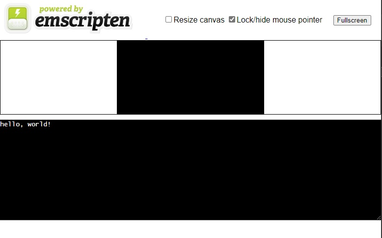

编译
-
新建 main.cpp 文件
#include <iostream> using namespace std; int main(){ cout << "hello world!" << endl; return 0; } -
使用
emcc或em++编译 C++ 文件
执行命令em++ main.cpp，会在同级目录下生成a.out.js和a.out.wasm两个文件。 -
使用
node测试
测试命令node a.out.js，会在控制台输出 cout 的内容 -
使用 html 页面 测试
执行命令em++ main.cpp -o hello.html，会在同级目录下生成三个文件：hello.html：测试网页hello.js：相关的胶水代码，包括加载 WASM 文件并执行调用等相关逻辑hello.wasm：编译得到的核心 WebAssembly执行文件
在本地启动一个静态网站服务器，就可以在浏览器中访问生成的网页了

-
编译带有 调试 信息的测试页面
执行命令em++ main.cpp -o hello.html -gsource-map，会在同级目录下生成四个文件：hello.htmlhello.jshello.wasmtestHello.wasm.map：带有调试信息的 wasm 文件映射，在浏览器的调试窗口就可以看到 cpp 文件并进行调试了
静态网页服务器
这里使用的是 http-server
- 安装 node.js
- 安装 http-server:
npm install http-server -g - 启动服务器：
http-server . -p 8000
WASM 调试
- 在编译命令中添加
-gsource-map参数 - 确保网站根目录下有 C++ 或 C 源文件
- 如果使用
cmake编译，在编译命令中还需要添加-DCMAKE_BUILD_TYPE=Debug参数